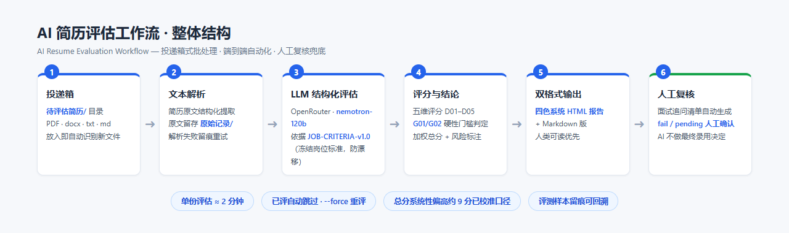
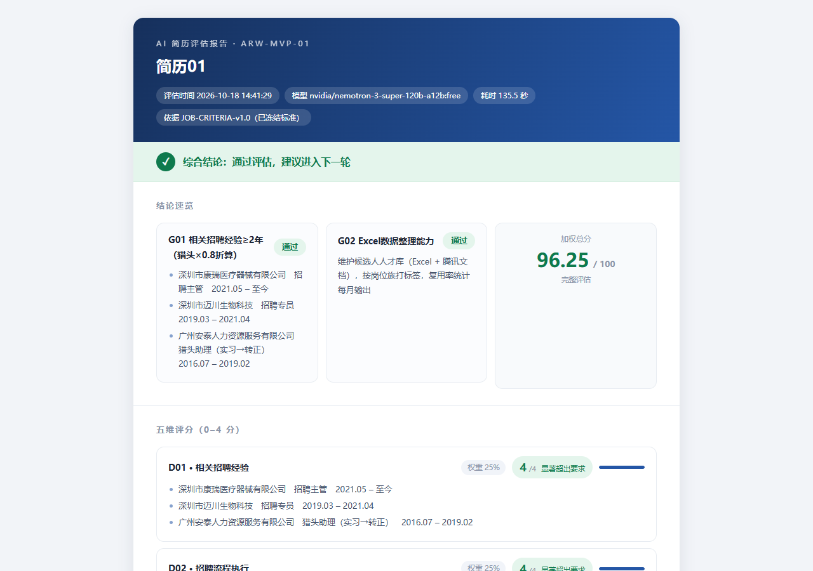
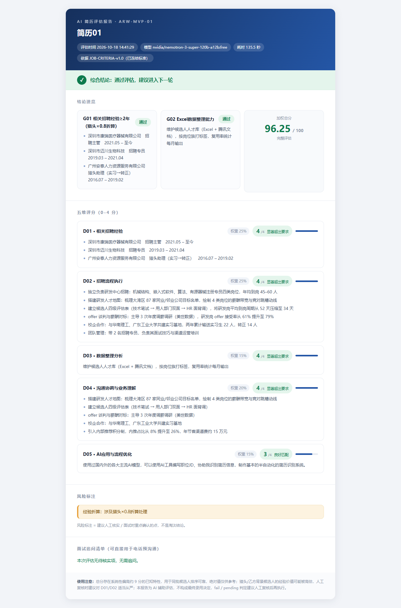

AI 招聘双工作流 · 在线展示
两条端到端自动化流水线：① AI 简历评估工作流（投递箱 → LLM 结构化评估 → 四色报告）② AI 招聘情报引擎（多源采集 → 时效过滤 → LLM 分析 → 双通道推送）。以下图片均为真实运行产出。
① 工作流整体结构

AI 简历评估工作流：6 阶段流水线，冻结岗位标准防评分漂移，人工复核兜底
 AI 招聘情报引擎：三道时效防线 + 三重去重 + 四维评分，每天 08:30 定时自动运行
AI 招聘情报引擎：三道时效防线 + 三重去重 + 四维评分，每天 08:30 定时自动运行
② 实际运行记录
 摘自 run_log.jsonl 的真实运行数据：采集-去重-分析漏斗、耗时、推送与评估结果，全链路留痕可回溯
摘自 run_log.jsonl 的真实运行数据：采集-去重-分析漏斗、耗时、推送与评估结果，全链路留痕可回溯
③ 最终输出结果
 AI 招聘情报日报（HTML 四色版式）：P0/P1 分级 · 中英双语 · outdated 隔离区
AI 招聘情报日报（HTML 四色版式）：P0/P1 分级 · 中英双语 · outdated 隔离区
④ 简历评估与岗位匹配结果

评估报告结论速览：G01/G02 硬性门槛判定 + 加权总分 96.25 + 五维评分明细

完整评估报告：五维评分（0–4 分）· 证据分条 · 风险标注 · 面试追问清单（四色系统，打印分节不跨页）